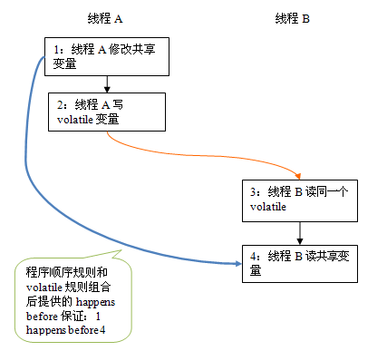
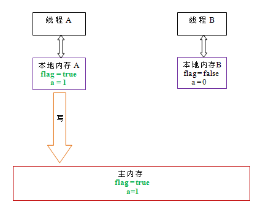
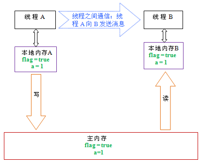

原子操作
原子操作：多个线程执行一个操作时，其中任何一个线程要么完全执行完此操作，要么没有执行此操作的任何步骤，那么这个操作就是原子的。
java.util.concurrent.atomic包中像AtomicInteger之类的都是用原子方式更新值。
值得注意的是AtomicIntegerFiledUpdater<T>、AtomicLongFieldUpdate<T>、AtomicReferenceFieldUpdater<T,V>这三个类，他们是基于反射，对于给定类的指定volatile字段进行原子更新。
class Container{
public volatile int num;
}
class Task extends Thread{
private AtomicIntegerFiledUpdater<Container> updater = AtomicIntegerFieldUpdater.newUpdater(Container.class,"num");
private Container c;
public Task(Container c){
this.c = c;
}
@Override
public void run(){
System.out.println(updater.getAndIncrement(c));
System.out.println(updater.getAndIncrement(c));
}
}
public class UpdaterUsage{
public static void main(String[] args){
Container c = new Container();
Task t1 = new Task(c);
Task t2 = new Task(c);
t1.start();
t2.start();
}
}
还有AtomicMarkableReference<V>类，它描述了一个<Object,Boolean>的对，可以原子的修改Object或者Boolean的值，这种数据结构在一些缓存或者状态描述中比较有用。AtomicStampReference<V>维护的是一种类似于<Object,int>的数据结构，其实就是对对象（引用）的一个并发计数，可以对引用对象和计数同时进行原子操作。
volatile语义
锁提供两种特性：互斥和可见性。
volatitle：相当于synchronzied的弱实现，它只能保证对单个volatile变量的读/写具有原子性，而监视器锁的互斥执行的特性可以确保整个临界区的执行具有原子行。
volatile变量具有如下特性：
-
可见性：对一个volatile变量的读，总是能看到（任意线程）对这个volatile变量最后的写入。 -
原子性：对任意单个volatile变量的读/写具有原子性，但类似volatile++这种复合操作不具有原子性。
volatile读写建立的happens-before关系
class VolatileExample{
int a =0;
volatile boolean flag = false;
public void writer(){
a =1; //1
flag = true; //2
}
public void reader(){
if(flag){ //3
int i = a; //4
.....
}
}
}
根据happens-before规则我们可以得出：
- 根据程序次序规则，1 happens-before 2 ; 3 happens-before 4
- 根据volatile规则，2 happens-before 3.
- 根据happens-before的传递性规则，1 happens-before 4
根据happens-before 关系我们的出： 
volatile写-读的内存语义
volatile写的内存语义
当写一个volatile变量时，JMM会把该线程对应的本地内存中的共享变量刷新到主内存。
以VolatileExample程序为例： 
如上图所示：线程A在写flag变量后，本地内存A中被线程A更新过的两个共享变量的值被刷新到主内存中。此时，本地内存A和主内存的共享变量的值是一致的。
volatile读的内存语义
当读一个volatile变量时，JMM会吧该线程对应的本地内存置为无效。线程接下来将从主内存中读取共享变量。
以VolatileExample程序为例： 
如上图所示：在读flag变量后，本地内存B已经被置为无效。此时，线程B必须从主内存中读取共享变量。线程B的读取操作将导致本地内存B与主内存的共享变量的值变成一致的。
volatile内存语义的实现
当然是以内存屏障做的各类禁止重排序喽，比较复杂就不抄了。
CAS操作
-
synchronized是一种独占锁，也就是悲观锁，会导致其他所有需要锁的线程挂起，等待持有锁的线程释放锁。 -
乐观锁，就是每次不加锁而是假设没有冲突的去完成某项操作，如果因为冲突失败就重试，直到成功为止，这种乐观锁用到的机制就是
CAScompare and swap。
CAS算法虽好，但会导致'ABA问题'；耗费CPU资源，即使没有任何竞争也会做一些无用功；会增加测试复杂度，稍不注意就会出现问题。 解决ABA问题方法很多，可以考虑增加一个修改计数，只有在修改计数相同且a不变的情况才做swap，也可以考虑引用版本号，当版本号相同才swap。
private volatile int value;// 借助volatile原语，保证线程间的数据是可见的
public final int get() {
return value;
}
public final int incrementAndGet() {
for (;;) {
int current = get();
int next = current + 1;
if (compareAndSet(current, next))
return next;
}//Spin自旋等待直到返为止置
}
整个JUC都是建立在CAS之上的
日期：2012-11-12、2012-11-22、2013-07-22
参考资料：Java 理论与实践: 非阻塞算法简介、JAVA并发编程学习笔记之CAS操作、深入浅出 Java Concurrency (5): 原子操作 part 4、JUC 基础内容概述、深入理解Java内存模型（四）——volatile、深入理解Java内存模型（四）——volatile